InnoDB
Mysql 架构
Mysql 架构图
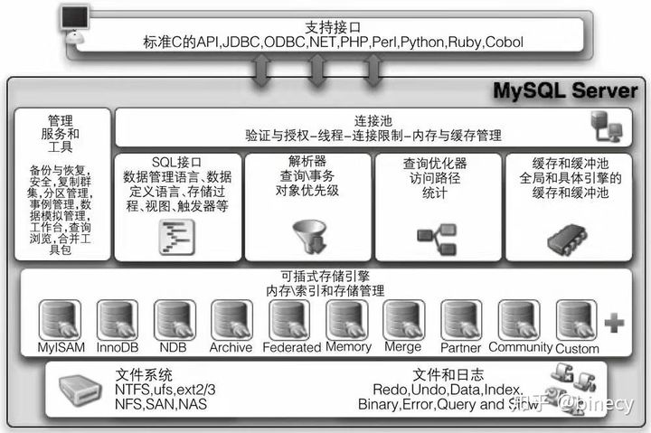
MySQL区别于其他数据库的一个最重要的特点是插件式存储引擎。它是基于表的，而不是数据库。MySql常用存储引擎如下：
MyISAM存储引擎
- 不支持事务。
- 缓冲池只缓存索引文件，不缓冲数据文件。
- 由MYD和MYI文件组成，MYD用来存放数据文件，MYI用来存放索引文件。
InnoDB存储引擎
- 独立表空间，支持MVCC，行锁设计，提供一致性非锁定读。
- 支持外键，插入缓冲，二次写，自适应哈希索引，预读。
- 使用聚集的方式存储数据，每张表的存储都是按主键顺序存放。
InnoDB架构图
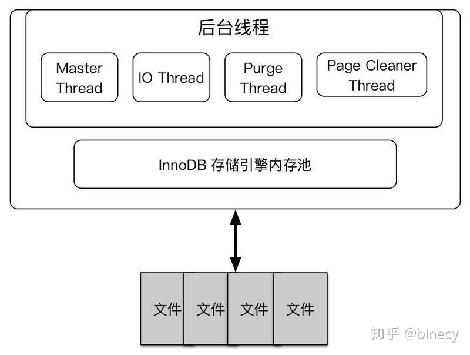
以下主要从内存和线程的角度分析InnoDB的架构。
内存池
主要工作：
- 维护所有进程/线程需要使用的多个内部数据结构
- 缓存磁盘上的数据，方便快速地读取，同时对磁盘文件数据修改之前在这里缓存
- 重做日志缓存
InnoDB内存池主要有以下部分
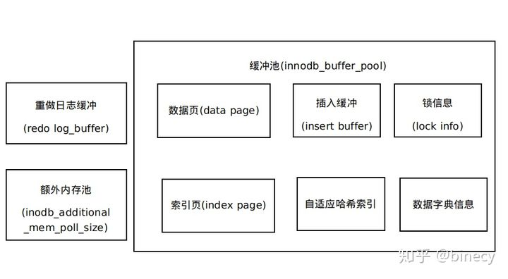
缓冲池
InnoDB是基于磁盘存储的，并将其中的记录按照页的方式进行管理。
而缓冲池就是一块内存区域，主要缓冲数据页和索引页。
InnoDB中对页的读取操作，首先判断该页是否在缓冲池中，若在，直接读取该页，若不在则从磁盘读取页数据，并存放在缓冲池中。
对页的修改操作，首先修改在缓冲池中的页，再以一定的频率（Checkpoint机制）刷新到磁盘。
参数：innodb_buffer_pool_size设置缓冲池大小
缓冲池通过LRU（Latest Recent Used，最近最少使用）算法进行管理。最频繁使用的页在LRU列表前端，最少使用的页在尾端，当缓冲池不能存放新读取的页时，首先释放LRU列表尾端的页（页数据刷新到磁盘，并从缓冲次中删除）。
InnoDB对于新读取的页，不是放到LRU列表最前端，而是放到midpoint位置（默认为5/8处）。
这是因为一些SQL操作会访问大量的页（如全表扫描），读取大量非热点数据，如果直接放到首部，可能导致真正的热点数据被移除。
关于页的概念会在存储篇解释，这里就理解为InnoDB将表数据拆分为若干固定大小的页，每页保存若干表记录。
重做日志缓存
重做日志先放到这个缓冲区，然后按一定频率刷新到重做日志文件。重做日志文件都是以块(block)的方法进行保存的，称为重做日志块（redo log block）
参数：innodb_log_buffer_size
刷新规则：
- Master Thread每秒将一部分重做日志缓冲刷新到重做日志文件。
- 每一事务提交时会将重做日志刷新到重做日志文件（如果配置了）。
- 重做日志缓冲区使用空间大于1/2。
额外的内存池
内存堆，对InnoDB内部使用的数据结构对象进行管理。
Checkpoint机制
InnoDB对于对于DML语句操作（如Update或Delete），事务提交时只需在缓冲池中完成操作，然后再通过Checkpoint将修改后的脏页数据刷新到磁盘。
InnoDB有两种Checkpoint：
- Sharp Checkpoint：数据库关闭时将所有脏页刷新会磁盘
- Fuzzy Checkpoint：
- Master Thread Checkpoint
Master Thread每个1秒或10秒按一定比例将缓存池的脏页列表刷新会磁盘 - FLUSH LRU LIST Checkpoint
Page Cleaner线程发现LRU列表中可用页数量少于innodb_lru_scan_depth(1024)，就将LRU列表尾端移除，如果这些页中有脏页，就需要Checkpoint - Async/Sync Flush Checkpoint
重做日志文件空间不可以用时，将一部分脏页刷新到磁盘。 - Dirty Page too much Checkpoint:
脏页数量太多（超过比例innodb_max_dirty_pages_pct,默认75），执行Checkpoint。
- Master Thread Checkpoint
重做日志
重做日志 redo log 是为了保证事务的原子性，持久性。InnoDB采用Write Ahread Log策略，事务提交时，先写重做日志，再修改页。
数据库宕机重启时通过执行重做日志恢复数据。
但由于Checkpoint机制，数据库宕机重启并不需要重做所有的日志，因为Checkpoint之前的页都刷新到磁盘了，只需执行最新一次Checkpoint后的重做日志进行恢复，这样可以缩短数据库的恢复时间。
InnoDB中重做日志文件是循环使用的。当页被Checkpoint刷新到磁盘后，对应的重做日志就不需要使用 ，其空间可以被覆盖重用。
如果待写入的重做日志文件空间不可用（脏页还没有刷新到磁盘），就需要强制产生Checkpoint，将缓冲池中的页至少刷新到当前重做日志的位置。
InnoDB 1.2.x(MySql 5.6)后，FLUSH LRU LIST Checkpoint以及Async/Sync Flush Checkpoint操作放到Page Cleaner线程，以免阻塞用户线程。
线程
主要作用：
- 负责刷新内存池中的数据，保证缓冲池的内存缓冲的是最近的数据
- 已修改的数据文件刷新到磁盘文件
- 保证数据库发生异常的情况下InnoDB能恢复到正常状态。
InnoDB运行时主要有以下线程
Master Thread
负责将缓冲池中的数据异步刷新到磁盘，保证数据的一致性，包括脏页的刷新，合并插入缓冲（INSERT BUFFER），UNDO页的回收等。IO Thread
负责AIO请求的回调处理。
参数：innodb_read_io_threads，innodb_write_io_threadsPurge Thread
事务提交后，undo log可能不再需要，由Purge Thread负责回收并重新分配的这些已经使用的undo页。
注意：Purge Thread需要离散地读取undo页。Page Cleaner Thread
InnoDB 1.2.x引入，将Master Threader中刷新脏页的工作移至该线程，如上面说的FLUSH LRU LIST Checkpoint以及Async/Sync Flush Checkpoint。
InnoDB关键特性
插入缓冲
插入聚集索引一般是顺序的，不需要磁盘的随机读取。但插入非聚集索引叶子节点不是顺序的，需要离散访问非聚集索引页，速度较慢。对于非聚集索引的插入或更新，先判断插入的非聚集索引页是否在缓存池中，若在，直接插入，或不在，先放到一个Inser Buffer对象中，然后根据一些算法将Insert Buffer缓存的记录通过后台线程慢慢合并刷新回辅助索引。插入缓冲将多次插入合并为一次操作，减少磁盘的离散操作。
使用Insert Buffer需满足两个条件：
- 索引是辅助索引
- 索引不是唯一的（不需要查找索引页判断唯一性）
InnoDB从1.0.x引入Change Buffer，对INSERT，DELETE，UPDATE都进行缓冲。
参数：innodb_change_buffer_max_size，Change Buffer最多使用缓冲池内存空间。
doublewrite
这是mysql一个崩溃恢复很重要的特性-重复写入。
doublewrite缓冲区是位于系统表空间中的存储区域，在该区域中，InnoDB会在将页面写入数据文件中的适当位置之前，从InnoDB缓冲池中刷新这些页面。仅在刷新页面并将其写入doublewrite缓冲区后，InnoDB才会将页面写入其适当位置。如果在页面写入过程中发生操作系统，存储子系统或mysqld进程崩溃，InnoDB稍后可以在崩溃恢复期间从doublewrite缓冲区中找到该页面的良好副本。
部分写失效：页数据写入到磁盘时只写了一部分（如16K数据只写了2K），数据库就宕机了，导致页数据损坏，这时无法使用重做日志恢复。（执行重做日志时需要利用页的一些变量，如checksum）
因此在使用重做日志恢复数据库，需要有一个页的副本，当发生写失效时，先通过页的副本还原该页，再进行重做。于是InnoDB实现了doublewrite技术。
doublewrite有两部分，一部分是内存中的doublewrite buffer，大小为2MB，另一部分是磁盘共享表空间连续的128个页，也是2MB。
doublewrite要求刷新缓冲池的脏页时执行以下步骤：
- 通过memcpy函数将脏页复制到内存的doublewrite buffer；
- doublewrite buffer分两次，每次1MB，顺序写入共享表空间；
- 调用fsync函数同步磁盘，避免缓冲写带来问题，确保数据刷新到共享表空间（顺序写，开销小）；
- 将上述的脏页数据写入各个表空间文件（离散写）。
自适应哈希索引
InnoDB会监控对表上各索引页的查询执行情况，如发现建立哈希索引可以提升速度，则建立哈希索引，这是过程不需要用户干预。
参数：innodb_adaptive_hash_index，默认AHI为开启状态。
异步IO
InnoDB使用异步IO操作磁盘，避免同步IO导致阻塞，也可以进行IO Merge操作，将多个IO操作合并为一个IO操作。
刷新邻接页
当刷新一个脏页时，InnoDB会检测该页所在区的所有页，如果是脏页，一起刷新，这是可以通过AIO将多个IO写入操作合并为一个IO操作。
参数：innodb_flush_neighbors，控制开关。
数据的存储
在 InnoDB 存储引擎中，所有的数据都被逻辑地存放在表空间中，表空间（tablespace）是存储引擎中最高的存储逻辑单位，在表空间的下面又包括段（segment）、区（extent）、页（page）：
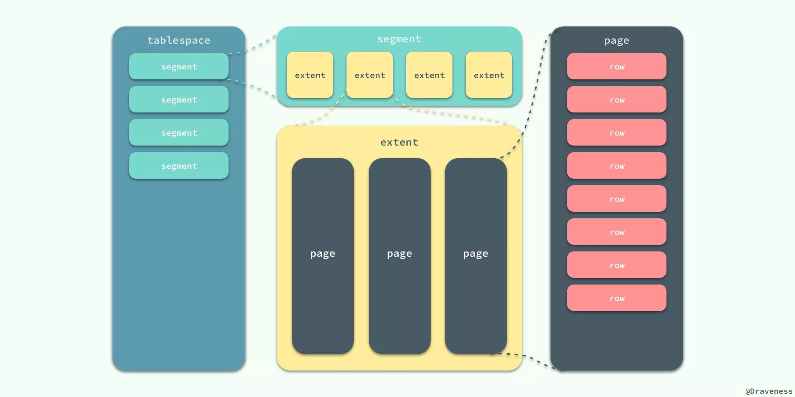
- 表空间
- InnoDB将所有数据（包括表数据，索引，回滚信息，插入缓冲索引页，系统事务信息，二次写缓冲）逻辑地放在一个空间中，称为共享表空间。
默认表空间的存储文件为data目录下的ibdata1，初始化为10M。
- InnoDB将所有数据（包括表数据，索引，回滚信息，插入缓冲索引页，系统事务信息，二次写缓冲）逻辑地放在一个空间中，称为共享表空间。
- 段
- 一个索引（InnoDB都是B+索引）由两个段管理，叶子节点段（leaf segment）和非叶子节点段（non leaf segment）
- 回滚数据也是通过段管理。
- 区
- InnoDB申请空间的最小单位，由连续页组成的空间，大小为1MB，保持不变。
- InnoDB一次从磁盘中申请4~5个区。
- 页
- InnoDB访问的最小单位，同一个数据库实例的所有表空间都有相同的页大小；默认情况下，表空间中的页大小都为 16KB。
- 缓冲池是以页为管理单位，每次读取或刷新一页数据。
- 可以通过改变 innodb_page_size选项对默认大小进行修改
需要注意的是不同的页大小最终也会导致区大小的不同：
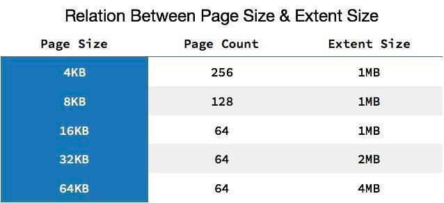
从图中可以看出，在 InnoDB 存储引擎中，一个区的大小最小为 1MB，页的数量最少为 64 个。
如何存储表
MySQL 使用 InnoDB 存储表时，会将表的定义和数据索引等信息分开存储，其中前者存储在 .frm文件中，后者存储在 .ibd文件中，这一节就会对这两种不同的文件分别进行介绍。
.frm 文件
无论在 MySQL 中选择了哪个存储引擎，所有的 MySQL 表都会在硬盘上创建一个 .frm文件用来描述表的格式或者说定义； .frm文件的格式在不同的平台上都是相同的。详见11.1 MySQL .frm File Format
.ibd 文件
InnoDB 中用于存储数据的文件总共有两个部分，一是系统表空间文件，包括 ibdata1、 ibdata2等文件，其中存储了 InnoDB 系统信息和用户数据库表数据和索引，是所有表公用的。
当打开 innodb_file_per_table选项时， .ibd文件就是每一个表独有的表空间，文件存储了当前表的数据和相关的索引数据。
如何存储记录
与现有的大多数存储引擎一样，InnoDB 使用页作为磁盘管理的最小单位；数据在 InnoDB 存储引擎中都是按行存储的，每个 16KB 大小的页中可以存放 2-200 行的记录。
当 InnoDB 存储数据时，它可以使用不同的行格式进行存储；MySQL 5.7 版本支持以下格式的行存储方式：
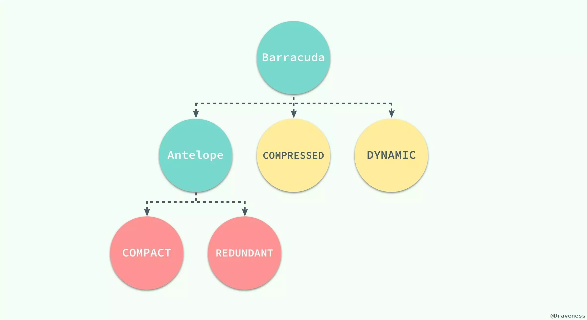
Antelope 是 InnoDB 最开始支持的文件格式，它包含两种行格式 Compact 和 Redundant，它最开始并没有名字；Antelope 的名字是在新的文件格式 Barracuda 出现后才起的，Barracuda 的出现引入了两种新的行格式 Compressed 和 Dynamic；InnoDB 对于文件格式都会向前兼容，而官方文档中也对之后会出现的新文件格式预先定义好了名字：Cheetah、Dragon、Elk 等等。
两种行记录格式 Compact 和 Redundant 在磁盘上按照以下方式存储：
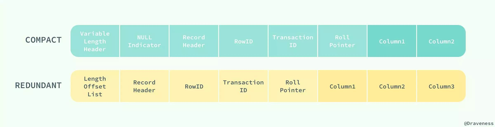
Compact 和 Redundant 格式最大的不同就是记录格式的第一个部分；在 Compact 中，行记录的第一部分倒序存放了一行数据中列的长度（Length），而 Redundant 中存的是每一列的偏移量（Offset），从总体上上看，Compact 行记录格式相比 Redundant 格式能够减少 20% 的存储空间。
行溢出数据
当 InnoDB 使用 Compact 或者 Redundant 格式存储极长的 VARCHAR 或者 BLOB 这类大对象时，我们并不会直接将所有的内容都存放在数据页节点中，而是将行数据中的前 768 个字节存储在数据页中，后面会通过偏移量指向溢出页。
但是当我们使用新的行记录格式 Compressed 或者 Dynamic 时都只会在行记录中保存 20 个字节的指针，实际的数据都会存放在溢出页面中。
当然在实际存储中，可能会对不同长度的 TEXT 和 BLOB 列进行优化，不过这就不是本文关注的重点了。
想要了解更多与 InnoDB 存储引擎中记录的数据格式的相关信息，可查看官方文档 InnoDB Record Structure
数据页结构
页是 InnoDB 存储引擎管理数据的最小磁盘单位，而 B-Tree 节点就是实际存放表中数据的页面，我们在这里将要介绍页是如何组织和存储记录的；首先，一个 InnoDB 页有以下七个部分：
每一个页中包含了两对 header/trailer：内部的 Page Header/Page Directory 关心的是页的状态信息，而 Fil Header/Fil Trailer 关心的是记录页的头信息。
在页的头部和尾部之间就是用户记录和空闲空间了，每一个数据页中都包含 Infimum 和 Supremum 这两个虚拟的记录（可以理解为占位符），Infimum 记录是比该页中任何主键值都要小的值，Supremum 是该页中的最大值：
User Records 就是整个页面中真正用于存放行记录的部分，而 Free Space 就是空余空间了，它是一个链表的数据结构，为了保证插入和删除的效率，整个页面并不会按照主键顺序对所有记录进行排序，它会自动从左侧向右寻找空白节点进行插入，行记录在物理存储上并不是按照顺序的，它们之间的顺序是由 next_record这一指针控制的。
B+ 树在查找对应的记录时，并不会直接从树中找出对应的行记录，它只能获取记录所在的页，将整个页加载到内存中，再通过 Page Directory 中存储的稀疏索引和 n_owned、 next_record属性取出对应的记录，不过因为这一操作是在内存中进行的，所以通常会忽略这部分查找的耗时。
InnoDB 存储引擎中对数据的存储是一个非常复杂的话题，这一节中也只是对表、行记录以及页面的存储进行一定的分析和介绍，想要真正消化这部分内容还需要很多的努力和实践。
索引
索引是数据库中非常非常重要的概念，它是存储引擎能够快速定位记录的秘密武器，对于提升数据库的性能、减轻数据库服务器的负担有着非常重要的作用；索引优化是对查询性能优化的最有效手段，它能够轻松地将查询的性能提高几个数量级。
索引的数据结构
在上一节中，我们谈了行记录的存储和页的存储，在这里我们就要从更高的层面看 InnoDB 中对于数据是如何存储的；InnoDB 存储引擎在绝大多数情况下使用 B+ 树建立索引，这是关系型数据库中查找最为常用和有效的索引，但是B+ 树索引并不能找到一个给定键对应的具体值，它只能找到数据行对应的页，然后正如上一节所提到的，数据库把整个页读入到内存中，并在内存中查找具体的数据行。
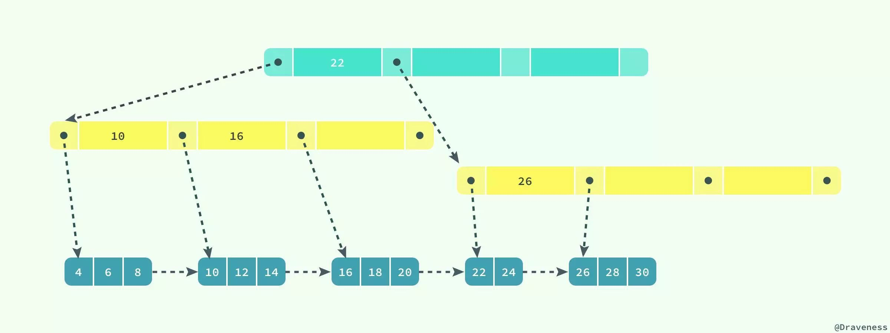
B+ 树是平衡树，它查找任意节点所耗费的时间都是完全相同的，比较的次数就是 B+ 树的高度；在这里，我们并不会深入分析或者动手实现一个 B+ 树，只是对它的特性进行简单的介绍。
聚集索引和辅助索引
数据库中的 B+ 树索引可以分为聚集索引（clustered index）和辅助索引（secondary index），它们之间的最大区别就是，聚集索引中存放着一条行记录的全部信息，而辅助索引中只包含索引列和一个用于查找对应行记录的『书签』。
聚集索引
InnoDB 存储引擎中的表都是使用索引组织的，也就是按照键的顺序存放；聚集索引就是按照表中主键的顺序构建一棵 B+ 树，并在叶节点中存放表中的行记录数据。
1 | CREATE TABLE users( |
如果使用上面的 SQL 在数据库中创建一张表，B+ 树就会使用 id 作为索引的键，并在叶子节点中存储一条记录中的所有信息。

图中对 B+ 树的描述与真实情况下 B+ 树中的数据结构有一些差别，不过这里想要表达的主要意思是：聚集索引叶节点中保存的是整条行记录，而不是其中的一部分。
聚集索引与表的物理存储方式有着非常密切的关系，所有正常的表应该有且仅有一个聚集索引（绝大多数情况下都是主键），表中的所有行记录数据都是按照聚集索引的顺序存放的。
当我们使用聚集索引对表中的数据进行检索时，可以直接获得聚集索引所对应的整条行记录数据所在的页，不需要进行第二次操作。
辅助索引
数据库将所有的非聚集索引都划分为辅助索引，但是这个概念对我们理解辅助索引并没有什么帮助；辅助索引也是通过 B+ 树实现的，但是它的叶节点并不包含行记录的全部数据，仅包含索引中的所有键和一个用于查找对应行记录的『书签』，在 InnoDB 中这个书签就是当前记录的主键。
辅助索引的存在并不会影响聚集索引，因为聚集索引构成的 B+ 树是数据实际存储的形式，而辅助索引只用于加速数据的查找，所以一张表上往往有多个辅助索引以此来提升数据库的性能。
一张表一定包含一个聚集索引构成的 B+ 树以及若干辅助索引的构成的 B+ 树。

如果在表 users 中存在一个辅助索引 (first_name, age)，那么它构成的 B+ 树大致就是上图这样，按照 (first_name, age) 的字母顺序对表中的数据进行排序，当查找到主键时，再通过聚集索引获取到整条行记录。
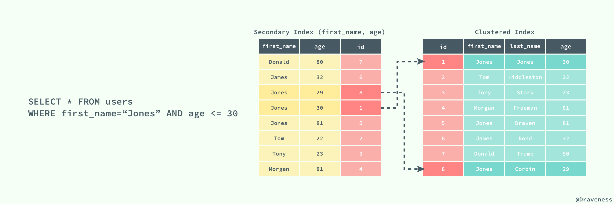
上图展示了一个使用辅助索引查找一条表记录的过程：通过辅助索引查找到对应的主键，最后在聚集索引中使用主键获取对应的行记录，这也是通常情况下行记录的查找方式。
锁
锁的种类
共享和互斥的锁
InnoDB 实现了标准的行级锁，也就是共享锁（Shared Lock）和互斥锁（Exclusive Lock）
- 共享锁（读锁）：允许事务对一条行数据进行读取；
- 互斥锁（写锁）：允许事务对一条行数据进行删除或更新；
意向锁
无论是共享锁还是互斥锁其实都只是对某一个数据行进行加锁，InnoDB 支持多种粒度的锁，也就是行锁和表锁；为了支持多粒度锁定，InnoDB 存储引擎引入了意向锁（Intention Lock），意向锁就是一种表级锁。
意向锁也分为两种：
- 意向共享锁：事务想要在获得表中某些记录的共享锁，需要在表上先加意向共享锁；
- 意向互斥锁：事务想要在获得表中某些记录的互斥锁，需要在表上先加意向互斥锁；
LOCK_MODE分别是：IS或IX。
随着意向锁的加入，锁类型之间的兼容矩阵也变得愈加复杂：

意向锁其实不会阻塞全表扫描之外的任何请求，它们的主要目的是为了表示是否有人请求锁定表中的某一行数据。
Record Lock 记录锁
记录锁（Record Lock）是加到索引记录上的锁，假设我们存在下面的一张表 users：
1 | CREATE TABLE users( |
如果我们使用 id 或者 last_name 作为 SQL 中 WHERE 语句的过滤条件，那么 InnoDB 就可以通过索引建立的 B+ 树找到行记录并添加锁，但是如果使用 first_name 作为过滤条件时，由于 InnoDB 不知道待修改的记录具体存放的位置，也无法对将要修改哪条记录提前做出判断就会锁定整个表。
Gap Lock 间隙锁
间隙锁是对索引记录中的一段连续区域的锁；当使用类似 SELECT * FROM users WHERE id BETWEEN 10 AND 20 FOR UPDATE; 的 SQL 语句时，就会阻止其他事务向表中插入 id = 15 的记录，因为整个范围都被间隙锁锁定了。
间隙锁是存储引擎对于性能和并发做出的权衡，并且只用于某些事务隔离级别。
虽然间隙锁中也分为共享锁和互斥锁，不过它们之间并不是互斥的，也就是不同的事务可以同时持有一段相同范围的共享锁和互斥锁，它唯一阻止的就是其他事务向这个范围中添加新的记录。可以解决幻读的问题。
Next-Key Lock 临键锁
Next-Key Lock 是记录锁和记录前的间隙锁的结合，在 users 表中有以下记录：
1 | +------|-------------|--------------|-------+ |
既然叫 Next-Key 锁，锁定的应该是当前值和后面的范围，但是实际上却不是，Next-Key 锁锁定的是当前值和前面的范围。
如果使用 Next-Key 锁，那么 Next-Key 锁就可以在需要的时候锁定以下的范围：
当我们更新一条记录，比如 SELECT * FROM users WHERE age = 30 FOR UPDATE;，InnoDB 不仅会在范围 (21, 30] 上加 Next-Key 锁，还会在这条记录后面的范围 (30, 40] 加间隙锁，所以插入 (21, 40] 范围内的记录都会被锁定。
Next-Key 锁的作用其实是为了解决幻读的问题。
Next-Key Lock在不同的场景中会退化:
| 场景 | 退化成的锁类型 |
|---|---|
| 使用unique index精确匹配（=），且记录存在 | Record Lock |
| 使用unique index精确匹配（=），且记录不存在 | Gap Lock |
| 使用unique index范围匹配（< 和 > ） | Record Lock + Gap Lock，锁上界不锁下界（或者锁下界不锁上界，与>还是<有关） |
Insert Intention Locks 插入意向锁
- 插入意向锁是一种Gap锁，不是意向锁，是在行插入之前通过INSERT操作设置的一种特殊间隙锁。
- 在多事务同时写入不同数据至同一索引间隙的时候，并不需要等待其他事务完成，不会发生锁等待。
- 假设有一个记录索引包含键值4和7，不同的事务分别插入5和6，每个事务都会产生一个加在4-7之间的插入意向锁，获取在插入行上的排它锁，但是不会被互相锁住，因为数据行并不冲突。
- 不同事务请求同一个间隙的Gap锁并不会阻塞，但如果一个事务请求了Gap锁，另一个事务再请求插入意向锁，则会阻塞。
锁的兼容性
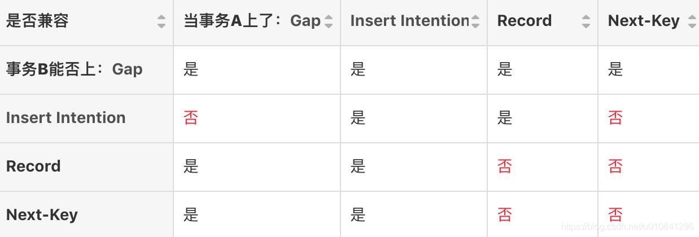
自增锁(AUTO-INC Locks)
AUTO-INC锁是一种特殊的表级锁，发生涉及AUTO_INCREMENT列的事务性插入操作时产生。
AUTO-INC锁是在语句结束后被释放。
空间索引的谓词锁
锁的选择
- 如果更新条件没有走索引，例如执行”update test set name=“hello” where name=“world”;” ，此时会进行全表扫描，扫表的时候，要阻止其他任何的更新操作，所以上升为表锁。
- 如果更新条件为索引字段，但是并非唯一索引（包括主键索引），例如执行“update test set name=“hello” where code=9;” 那么此时更新会使用Next-Key Lock。使用Next-Key Lock的原因：
- 首先要保证在符合条件的记录上加上排他锁，会锁定当前非唯一索引和对应的主键索引的值；
- 还要保证锁定的区间不能插入新的数据。
- 如果更新条件为唯一索引，则使用Record Lock（记录锁）。
加锁操作
重要影响因素：
- 当前系统隔离级别
- RR
- RC
- Serializable
- 根据sql或者执行计划判断其所使用的索引类型
- 主键索引
- 二级索引 & 唯一索引
- 二级索引 & ！唯一索引
- 无索引，全表扫描
下面列举几种常见场景下的加锁逻辑
插入
- 首先对表加上IX锁。
- 唯一索引冲突检查：如果唯一索引上存在相同项，进行S锁当前读，读到数据则唯一索引冲突，返回异常，否则检查通过。
- 判断插入位置是否存在Gap锁或Next-Key锁，没有的话直接插入，有的话等待锁释放，并产生插入意向锁。
- 对插入记录的所有索引项加X锁。
死锁原理与分析
下面，来看看两个死锁的例子 (一个是两个Session的两条SQL产生死锁；另一个是两个Session的一条SQL，产生死锁)：
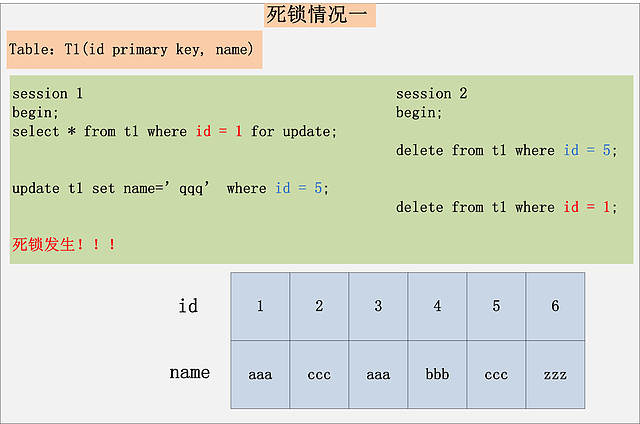
情况一很好理解，也是最常见的死锁，每个事务执行两条SQL，分别持有了一把锁，然后加另一把锁，产生死锁。
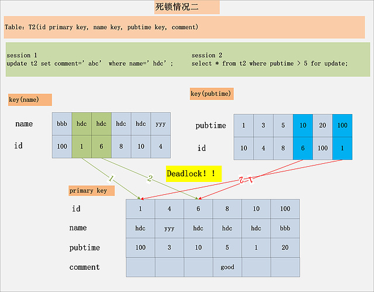
第二个用例，虽然每个Session都只有一条语句，仍旧会产生死锁。要分析这个死锁，首先必须用到本文前面提到的MySQL加锁的规则。针对Session 1，从name索引出发，读到的[hdc, 1]，[hdc, 6]均满足条件，不仅会加name索引上的记录X锁，而且会加聚簇索引上的记录X锁，加锁顺序为先[1,hdc,100]，后[6,hdc,10]。而Session 2，从pubtime索引出发，[10,6],[100,1]均满足过滤条件，同样也会加聚簇索引上的记录X锁，加锁顺序为[6,hdc,10]，后[1,hdc,100]。发现没有，跟Session 1的加锁顺序正好相反，如果两个Session恰好都持有了第一把锁，请求加第二把锁，死锁就发生了。
结论：死锁的发生与否，并不在于事务中有多少条SQL语句，死锁的关键在于：两个(或以上)的Session加锁的顺序不一致。
锁信息查看
MySQL5.7及之前，可以通过information_schema.innodb_locks查看事务的锁情况，但，只能看到阻塞事务的锁；如果事务并未被阻塞，则在该表中看不到该事务的锁情况。
MySQL8.0删除了information_schema.innodb_locks，添加了performance_schema.data_locks，可以通过performance_schema.data_locks查看事务的锁情况，和MySQL5.7及之前不同，performance_schema.data_locks不但可以看到阻塞该事务的锁，还可以看到该事务所持有的锁，也就是说即使事务并未被阻塞，依然可以看到事务所持有的锁（不过，正如文中最后一段所说，performance_schema.data_locks并不总是能看到全部的锁）。表名的变化其实还反映了8.0的performance_schema.data_locks更为通用了，即使你使用InnoDB之外的存储引擎，你依然可以从performance_schema.data_locks看到事务的锁情况。
data_locks详见官方文档。
1 | mysql> SELECT * FROM performance_schema.data_locks\G |
重点字段：
1 | select ENGINE_TRANSACTION_ID,OBJECT_NAME,INDEX_NAME,LOCK_TYPE,LOCK_MODE,LOCK_STATUS,LOCK_DATA from performance_schema.data_locks; |
ENGINE_TRANSACTION_ID
- 请求锁的事务的存储引擎内部ID。这可以被认为是锁的所有者，尽管锁可能仍然是挂起的，实际上还没有授予(LOCK_STATUS=’WAITING’)。如果事务还没有执行任何写操作(仍然认为是只读的)，则该列包含用户不应该尝试解释的内部数据。否则，列就是事务ID。对于InnoDB，为了获得事务的详细信息，将该列与INFORMATION_SCHEMA INNODB_TRX表中的TRX_ID列连接。
OBJECT_NAME
- 被锁住的表的名称。
INDEX_NAME
- 锁定索引的名称(如果有的话);否则为null。实际上，InnoDB总是创建一个索引(GEN_CLUST_INDEX)，所以InnoDB表的INDEX_NAME是非null。
LOCK_TYPE
- 锁的类型。取值依赖存储引擎。对于InnoDB，行级锁允许的值是RECORD，表级锁允许的值是TABLE。
LOCK_MODE
- 如何请求锁。取值依赖存储引擎。对于InnoDB，允许的值为S[，GAP]， X[，GAP]， IS[，GAP]， IX[，GAP]， AUTO_INC, UNKNOWN。除AUTO_INC和UNKNOWN之外的锁模式表示间隙锁(如果存在)。关于S, X, IS, IX和gap锁的信息，请参考InnoDB Locking。
LOCK_STATUS
- 锁的请求状态。取值依赖存储引擎。对于InnoDB，允许的值是GRANTED(锁被持有)和WAITING(锁被等待)。
LOCK_DATA
- 与锁相关联的数据(如果有)。取值依赖存储引擎。对于InnoDB, LOCK_TYPE为RECORD时显示一个值，否则为NULL。对于放置在主键索引上的锁，将显示锁定记录的主键值。显示被锁定记录的次级索引值，并为放置在次级索引上的锁附加主键值。如果没有主键，根据管理InnoDB集群索引使用的规则(参见集群索引和二级索引)，LOCK_DATA将显示所选唯一索引的键值或唯一InnoDB内部行ID号。LOCK_DATA对一个最高伪记录上获取的锁报告为“supremum pseudo-record”。如果包含锁定记录的页面不在缓冲池中，因为它在锁被持有时被写入了磁盘，InnoDB不会从磁盘获取该页面。相反，LOCK_DATA报告为NULL。
几种隔离级别
事务的隔离性是数据库处理数据的几大基础之一，而隔离级别其实就是提供给用户用于在性能和可靠性做出选择和权衡的配置项。
ISO 和 ANSI SQL 标准制定了四种事务隔离级别，而 InnoDB 遵循了 SQL:1992 标准中的四种隔离级别：READ UNCOMMITED、READ COMMITED、REPEATABLE READ 和 SERIALIZABLE；每个事务的隔离级别其实都比上一级多解决了一个问题：
RAED UNCOMMITED：使用查询语句不会加锁，可能会读到未提交的行（Dirty Read）；READ COMMITED：只对记录加记录锁，而不会在记录之间加间隙锁，所以允许新的记录插入到被锁定记录的附近，所以再多次使用查询语句时，可能得到不同的结果（Non-Repeatable Read）；REPEATABLE READ：多次读取同一范围的数据会返回第一次查询的快照，不会返回不同的数据行，但是可能发生幻读（Phantom Read）；SERIALIZABLE：InnoDB 隐式地将全部的查询语句加上共享锁，解决了幻读的问题；
MySQL 中默认的事务隔离级别就是 REPEATABLE READ，但是它通过 Next-Key 锁也能够在某种程度上解决幻读的问题。
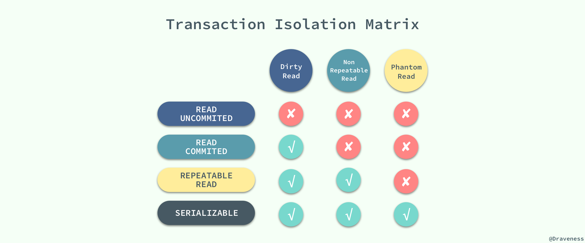
快照读（一致性非锁定读）：
简单的select操作，没有lock in share mode或for update，快照读不会加任何的锁，而且由于mysql的一致性非锁定读的机制存在，任何快照读也不会被阻塞。但是如果事务的隔离级别是SERIALIZABLE的话，那么快照读也会被加上共享的next-key锁，本文不对SERIALIZABLE隔离级别做叙述。
当前读（一致性锁定读）：
官方文档的术语叫locking read，也就是insert，update，delete,select..in share mode和select..for update,当前读会在所有扫描到的索引记录上加锁，不管它后面的where条件到底有没有命中对应的行记录。当前读可能会引起死锁。
1 | select * from table where ? lock in share mode; |
- 所有以上的语句，都属于当前读，读取记录的最新版本。并且，读取之后，还需要保证其他并发事务不能修改当前记录，对读取记录加锁。其中，除了第一条语句，对读取记录加S锁 (共享锁)外，其他的操作，都加的是X锁 (排它锁)。
为什么将 插入/更新/删除 操作，都归为当前读？可以看看下面这个 更新 操作，在数据库中的执行流程：
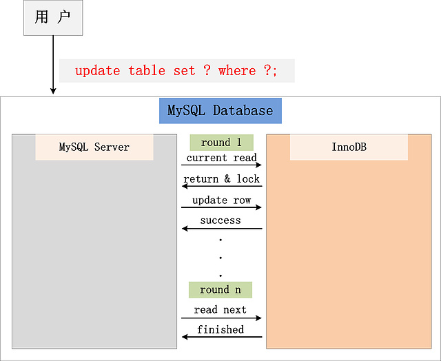
从图中，可以看到，一个Update操作的具体流程。当Update SQL被发给MySQL后，MySQL Server会根据where条件，读取第一条满足条件的记录，然后InnoDB引擎会将第一条记录返回，并加锁 (current read)。待MySQL Server收到这条加锁的记录之后，会再发起一个Update请求，更新这条记录。一条记录操作完成，再读取下一条记录，直至没有满足条件的记录为止。因此，Update操作内部，就包含了一个当前读。同理，Delete操作也一样。Insert操作会稍微有些不同，简单来说，就是Insert操作可能会触发Unique Key的冲突检查，也会进行一个当前读。
注：根据上图的交互，针对一条当前读的SQL语句，InnoDB与MySQL Server的交互，是一条一条进行的，因此，加锁也是一条一条进行的。先对一条满足条件的记录加锁，返回给MySQL Server，做一些DML操作；然后在读取下一条加锁，直至读取完毕。
Binlog
Mysql binlog是二进制日志文件，在mysql主从复制中就是依靠的binlog。
1 | show binlog events in 'binlogfile'; -- 查看binlog的具体事件类型。 |
binlog记录的所有操作实际上都有对应的事件类型的，MySQL binlog的三种工作模式：
- Row level（用到MySQL的特殊功能如存储过程、触发器、函数，又希望数据最大化，则选择Row模式）
简介：日志中会记录每一行数据被修改的情况，然后在slave端对相同的数据进行修改。优点：能清楚的记录每一行数据修改的细节 缺点：数据量太大 - Statement level（默认）
简介：每一条被修改数据的sql都会记录到master的bin-log中，slave在复制的时候sql进程会解析成和原来master端执行过的相同的sql再次执行。在主从同步中一般是不建议用statement模式的，因为会有些语句不支持，比如语句中包含UUID函数，以及LOAD DATA IN FILE语句等优点：解决了 Row level下的缺点，不需要记录每一行的数据变化，减少bin-log日志量，节约磁盘IO，提高新能 缺点：容易出现主从复制不一致 - Mixed（混合模式）
简介：结合了Row level和Statement level的优点，同时binlog结构也更复杂。在Mixed模式下，一般的语句修改使用statment格式保存binlog，如一些函数，statement无法完成主从复制的操作，则采用row格式保存binlog，MySQL会根据执行的每一条具体的sql语句来区分对待记录的日志形式，也就是在Statement和Row之间选择一种。
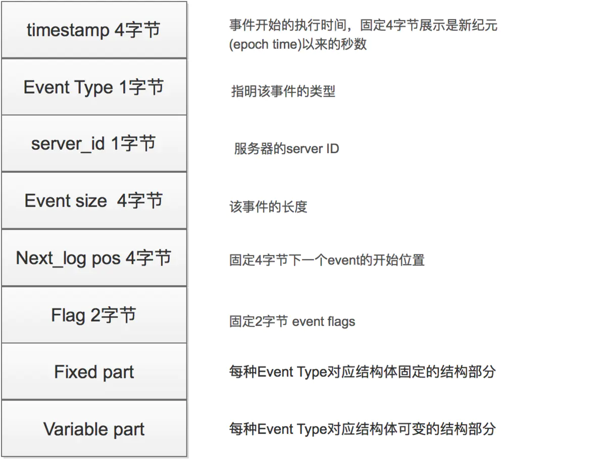
下面描述几个重要的EVENT类型：
- QUERY_EVENT
- QUERY_EVENT以文本的形式来记录事务的操作。QUERY_EVENT类型的事件通常在以下几种情况下使用：
- 事务开始时，执行的BEGIN操作。
- STATEMENT格式中的DML操作。
- ROW格式中的DDL操作。
- QUERY_EVENT以文本的形式来记录事务的操作。QUERY_EVENT类型的事件通常在以下几种情况下使用：
- FORMAT_DESCRIPTION_EVENT
- 它是binlog文件中的第一个事件，而且，该事件只会在binlog中出现一次。MySQL根据FORMAT_DESCRIPTION_EVENT的定义来解析其它事件。
它通常指定了MySQL Server的版本，binlog的版本，该binlog文件的创建时间。
- 它是binlog文件中的第一个事件，而且，该事件只会在binlog中出现一次。MySQL根据FORMAT_DESCRIPTION_EVENT的定义来解析其它事件。
- ROWS_EVENT
- 对于ROW格式的binlog，所有的DML语句都是记录在ROWS_EVENT中。
ROWS_EVENT分为三种：WRITE_ROWS_EVENT，UPDATE_ROWS_EVENT，DELETE_ROWS_EVENT，分别对应insert，update和delete操作。- 对于insert操作，WRITE_ROWS_EVENT包含了要插入的数据
- 对于update操作，UPDATE_ROWS_EVENT不仅包含了修改后的数据，还包含了修改前的值。
- 对于delete操作，仅仅需要指定删除的主键（在没有主键的情况下，会给定所有列）
- 对于ROW格式的binlog，所有的DML语句都是记录在ROWS_EVENT中。
- XID_EVENT
- 在事务提交时，不管是STATEMENT还是ROW格式的binlog，都会在末尾添加一个XID_EVENT事件代表事务的结束。该事件记录了该事务的ID，在MySQL进行崩溃恢复时，根据事务在binlog中的提交情况来决定是否提交存储引擎中状态为prepared的事务。
- ROTATE_EVENT
- 当binlog文件的大小达到max_binlog_size的值或者执行flush logs命令时，binlog会发生切换，这个时候会在当前的binlog日志添加一个ROTATE_EVENT事件，用于指定下一个日志的名称和位置。
- GTID_LOG_EVENT
- PREVIOUS_GTIDS_LOG_EVENT
- STOP_EVENT
- 当MySQL数据库停止时，会在当前的binlog末尾添加一个STOP_EVENT事件表示数据库停止。
- HEARTBEAT_LOG_EVENT
- 这个事件是由master发给slave的，让slave知道master还活着。
WAL机制
WAL（Write-Ahead Logging）技术，也就是先写日志，再写磁盘。
当内存数据页跟磁盘数据页内容不一致的时候，我们成这个内存页为“脏页”。内存数据写入磁盘后，内存和磁盘上的数据页内容就一致了，称为“干净页”。
MySQL 从 内存更新到磁盘的过程，称为刷脏页的过程（flush）。
InnoDB 刷脏页的时机
- 内存中的redo log 写满了，这时系统就会停止所有更新操作，把checkoutpoint 往前推，redo log留出空间可以继续写。
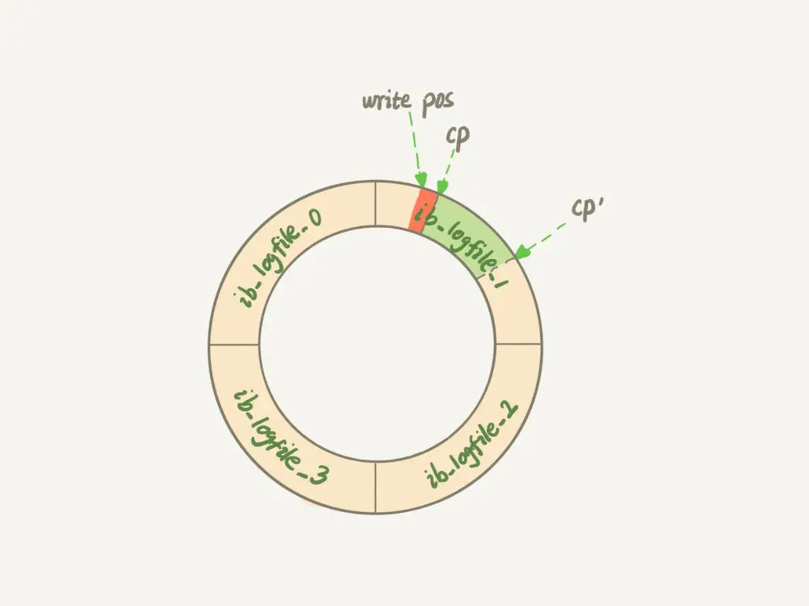
往前推进之后，就要把两个点之间的日志对应的所有脏页都 flush 到磁盘上。
这种情况是 InnoDB 要尽量避免的。因为出现这种情况，整个系统都不能接受更新。更新数会跌为0。
系统中内存不足时，当这个时候需要新的数据页到内存中，就要淘汰掉一些数据页，如果淘汰的是“脏页”，就要先将“脏页”写到磁盘。
这种情况在日常应用中其实是常态。在InnoDB 中，使用缓冲池 （buffer pool）管理内存，缓冲池中的内存页有三种状态：
- 还没有使用的；
- 使用了并且是干净页
- 使用了并且是脏页
数据库空闲的时候刷脏页。
数据库正常关闭的时候，也要把内存中所有的脏页全都flush 到磁盘上。
对性能的影响
刷脏页是常态，所以如果出现以下的情况，都会明明显影响性能：
- 一个查询要淘汰的脏页太多，会导致查询的响应时间明显变长；
- 日志写满，更新全部堵住，写性能跌为0，这种情况对于敏感业务来说是不能接受的。
binlog 的写入机制
binlog 的写入机制比较简单：事务执行的过程中，先把日志写到 binlog cache，事务提交的时候，再把 binlog cache 写到binlog 文件中。
系统给 binlog cache 分配了一片内存，每个线程一个，参数 binglog_cache_size 用于控制单个线程内 binlog cache 的内存大小，超过就要暂存在磁盘。
事务提交的时候，执行器把 binlog cache 里完整事务写入到 binlog 中，并清空 binlog cache。
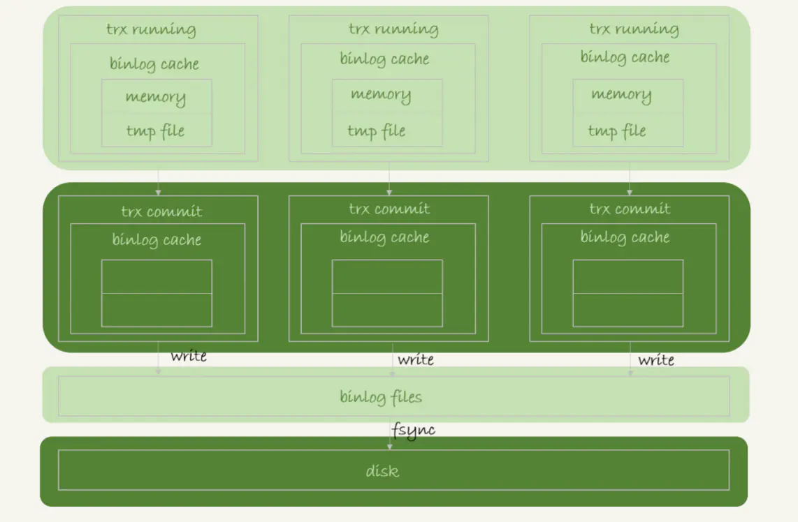
- write 指的是把日志写入到文件系统的 page cache，并没有把数据持久化到磁盘，所以速度比较快。
- fsync 是持久化到磁盘的操作，一般情况下， fsync 才会占磁盘的 IOPS。
write 和 fsync 的时机，是由参数 sync_binlog 控制的：
- sync_binlog=0 的时候，表示每次提交事务都只 write，不 fsync；
- sync_binlog=1 的时候，表示每次提交事务都会执行 fsync；
- sync_binlog=N(N>1) 的时候，表示每次提交事务都 write，但累积 N 个事务后才 fsync。
因此，在出现 IO 瓶颈的场景里，将 sync_binlog 设置成一个比较大的值，可以提升性能。在实际的业务场景中，考虑到丢失日志量的可控性，一般不建议将这个参数设成 0，比较常见的是将其设置为 100~1000 中的某个数值。但是，将 sync_binlog 设置为 N，对应的风险是：如果主机发生异常重启，会丢失最近 N 个事务的 binlog 日志。
redo log 的写入机制
事务的执行过程中，生成的 redo log 是要先写到 redo log buffer。
redo log 三种状态：
- 存在 redo log buffer 中，物理上是在 MySQL 进程内存中。
- 写到磁盘（write），但是没有持久化（fsync），物理上是在文件系统的 page cache 里。
- 持久化磁盘，对应的是 hard disk。
日志写到 redo log buffer 是很快的，write 到 page cache 也差不多，但是持久化到磁盘的速度就慢多了。
InnoDB 提供了 innodb_flush_log_at_trx_commit 参数，取值如下：
- 设置为 0 时，表示每次事务提交时都只是把 redo log 留在 redo log buffer 中；
- 设置为 1 时，表示每次事务提交时都将 redo log 直接持久化到磁盘；
- 设置为 2 时，表示每次事务提交时都只是把 redo log 写到 page cache。
InnoDB 有一个后台线程，每隔 1 秒，就会把 redo log buffer 中的日志，调用 write 写到文件系统的 page cache，然后调用 fsync 持久化到磁盘。
组提交机制
日志逻辑序列号（log sequence number，LSN）是一个单调递增的值，对应 redo log 的一个个写入点。每次写入的长度为 length 的 redo log，LSN的值就会加上 length。
LSN 也会写到 InnoDB 的数据页中，来确保数据也不会被多次执行重复的 redo log。
在一组提交里面，组员越多，节约磁盘 IOPS 的效果越好。在并发更新的场景下，第一个事务写完 redo log buffer 以后，接下来这个 fsync 越晚调用，组员可能越多，节约 IOPS 的效果就越好。
- binlog_group_commit_sync_delay 参数，表示延迟多少微秒后才调用 fsync;
- binlog_group_commit_sync_no_delay_count 参数，表示累积多少次以后才调用 fsync。
WAL机制主要得益于两个方面：
- redo log 和binlog 都是顺序写，磁盘的顺序写比随机写速度要快；
- 组提交机制，可以大幅度降低磁盘的 IOPS 消耗。
如果你的 MySQL 现在出现了性能瓶颈，而且瓶颈在 IO 上，可以通过哪些方法来提升性能呢？
针对这个问题，可以考虑以下三种方法：
- 设置 binlog_group_commit_sync_delay 和 binlog_group_commit_sync_no_delay_count 参数，减少 binlog 的写盘次数。这个方法是基于“额外的故意等待”来实现的，因此可能会增加语句的响应时间，但没有丢失数据的风险。
- 将 sync_binlog 设置为大于 1 的值（比较常见是 100~1000）。这样做的风险是，主机掉电时会丢 binlog 日志。
- 将 innodb_flush_log_at_trx_commit 设置为 2。这样做的风险是，主机掉电的时候会丢数据。
感谢参考（摘抄）的文章及其作者